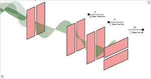
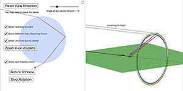
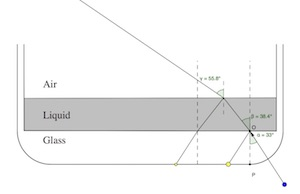

|
Light Mixing
Mix colors of light with adjustable brightness.
Drag the circles to experiment with mixing colors of light. Use the sliders to change the light intensities.
|

| Color Pigment Mixing
Mix colors of light with adjustable brightness.
Drag the circles to experiment with mixing colors of light. Use the sliders to change the light intensities.
|
|

| Polarization of Light
This is a simulation intended to help visualize polarization. A polarizing filter has a particular transmission axis and only allows light waves aligned with that axis to pass through. In this simulation unpolarized waves pass through a vertical slit, leaving only their vertical components. This vertical transverse wave approaches a vertical slit. If the slit is rotated, only a component of the wave can pass through. If the slit is rotated 90 degrees, the wave is stopped completely. |

| Double Slit Diffraction and Interference
This is a simulation of light being diffracted by a double slit, intended for anyone looking to learn about diffraction and interference.
Use the sliders to change the wavelength of the light, the distance between the slits, the distance to the screen, and the height of the point where the waves come together on the screen. You can use the checkboxes to choose between dots representing crests or troughs on the red wave, in order to look for constructive or destructive interference
|

| Double Slit Interference
This is a simulation of diffraction of light by a double slit. Use the sliders to adjust the distance between the slits and the wavelength of the light. Use the checkboxes to show or hide the wavefronts, maxima, and vertical scale. Use the Show Interference Pattern button to create the interference pattern that would be seen on the screen. Note that the distances in the simulation are all very small, so that you can see the wavelength separations. The y distances shown in the scale and the distance from the slits to the screen (L) are proportional, so they can just be thought of as meters or any other convenient unit.
|

| Diffraction Grating Laser Lab
This is a simulation of a typical laser diffraction lab set up. Examine the set up in the 3D window, it shows a laser, a diffraction grating, and a screen. Use the checkbox to place the grating in front of the laser, and look at the pattern of dots that appear on the screen. Use the sliders to change the distance from the grating to the screen, the number of lines per millimeter in the diffraction grating, and the wavelength of the laser. Use the diagram of the screen in the top window to analyze the numerical positions of the dots on the screen using diffraction equations.
|

| Thin Film Interference
This is a simulation of thin-film interference. In thin-film interference, light waves reflect of the front and back surfaces of a transparent thin-film. The two primary reflected waves interfere, sometimes constructively.
Use the sliders or input boxes to adjust the index of refraction of the material in front of the thin film, the thin film, and the material behind the thin film, as well as the thickness of the thin film and the wavelength of the incoming light.
|

| Reflection and Refraction
A basic simulation showing refraction and reflection of a light ray.
This is a simple simulation showing the reflection and refraction of a ray of light as it attempts to move from one medium to another. Use the sliders to adjust the index of refraction of each of the two materials, as well as the angle of incidence (the angle between the incident ray of light and the normal to the surface). Use the check boxes to show or hide various information.
|

| Dispersion of Light
Prism color dispersion, ala Pink Floyd.
Move the white dot to change the orientation of the incident ray of white light. Use the sliders to adjust the index of refraction of the surrounding materila (n1), the red light index of refraction of the prism (nred), and the percent difference between the index of refraction of the prism for red light and the index of refraction of the prism for violet light (% Difference).
|

| Plane Mirrors
This is a simulation of image formation in a plane mirror. Move the top or bottom of the red arrow to see the effect on the image.
|

| Concave and Convex Mirrors
Simulation of image formation in concave and convex mirrors.
Move the tip of the Object arrow or the point labeled focus. Move the arrow to the right side of the mirror to get a convex mirror.
|

| iPad Spherical Mirror Simulation
Concave and Convex Mirror Simulation optomized for use on mobile devices. |

| Concave and Convex Lenses
Simulation of image formation in concave and convex lenses.
Move the tip of the "Object" arrow to move the object. Move the point named " Focus' " to change the focal length.
Move the point named " Focus' " to the right side of the lens to change to a concave lens.
|

| Lens Simulation for iPad
Concave and Convex Lens Simulation optomized for mobile devices.
|

| Lens Refraction and Spherical Aberration
Simulation of refraction and spherical aberration for lenses.
This simulation shows realistic refraction of parallel rays passing through a convex lens with spherical surfaces. Unlike the Convex and Concave Lenses simulation, where all the bending occurs at the center of the lens and all parallel rays pass exactly through the focus, this simulation uses Snell's law to determine the actual amount of bending at each of the surfaces of the lens. You can adjust the amount of curvature for each side of the lens, the index of refraction of both the lens and the material surrounding the lens, and the zoom level. The fact that the parallel rays do not converge at a single point is due to spherical aberration.
|

| Lenses & Chromatic Aberration
Simulation showing chromatic aberration of lenses.
This simulation shows the bending of red and violet rays from either end of the visible spectrum as it occurs in lenses. Use the sliders to adjust the radii of the spherical lens surfaces and the index of refraction of the lens. Use the buttons to zoom in or out.
|

| 2D Image Formation by Lenses
This is another simulation showing images formed by concave and convex lenses, but this one shows the images of two dimensional objects.
Many lens simulations show the images formed by a simple one dimensional object, typically an arrow. This one allows you to see the images of two dimensional objects. move the circle, triangle and quadrilateral on the left side of the lens, change their size and shape, and watch the images formed on the right side of the lens. Move the point labeled " F' " to change the focal length of the lens. Move " F' " to the right side of the lens to change from a convex to a concave lens.
|

| Optics of the Human Eye
This is a simulation demonstrating the optics of the human eye. It also shows how various lenses can be used to correct for faulty vision. Be aware that it is a simplified version of what actually happens. In the simulation, there is no bending when light moves from the air into the eye (when most of the actual bending happens). Instead, in the simulation only the bendings that happen in the lens of the eye (or in the corrective lenses) is shown
|

| Rainbow Formation
This simulation is intended to help students understand some of the phenomena involved during the formation of rainbows.
|
|

| Rainbow Formation in 3D
This is a 3D simulation of the processes involved in the formation of a rainbow.
|
|

| AP Physics 2 Refraction Problem
This is a simulation based on a problem on the publicly released 2015 AP Physics 2 exam.
I used the actual indices of refraction given in the problem, and made the simulation to the same scale as used in the problem. The simulation shows why you see two dots at the bottom of the glass when the original angle of incidence is small enough. It also illustrates why the second dot gets brighter when the critical angle of incidence is reached at the liquid-air interface. The simulation also shows that the part of the problem about why the second dot disappears is misleading. The problem states that the second dot disappears due to total internal reflection, but you can see in the simulation that the second dot would actually disappear due to its ray not hitting the bottom of the glass container long before the critical angle for the glass-liquid interface is reached.
|

| Image Formation with Convex Lenses
This is an new simulation that can be used to explore image formation using a convex lens. Unlike the other convex lens simulations on this site, it allows you to zoom in and out to adjust the scale, a choice of dark or light background, and a view choice with many rays of light.
|
 SimuLearn: An Interactive Physics Learning Experience
SimuLearn: An Interactive Physics Learning Experience